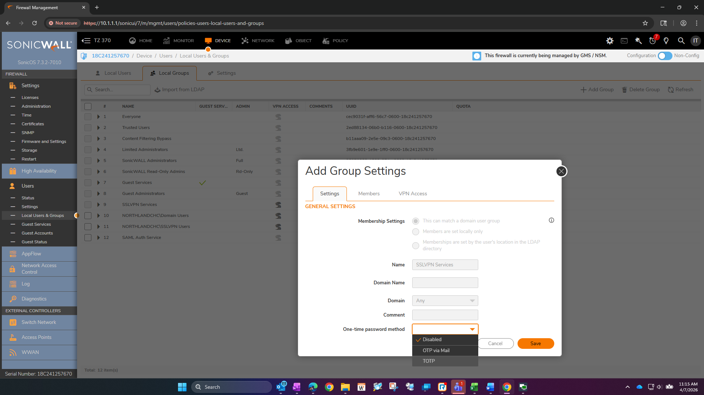

The audit finds the gap. The program closes it.
Healthcare cybersecurity and GRC.
Sole security and GRC practitioner across an 11-site federally qualified health center. Independent compliance peer-consultant to a 10-FQHC healthcare consortium. WGU MS Cybersecurity, April 2026. CompTIA SecurityX (CASP+), CySA+, Pentest+, Security+, Network+, A+. CISM, CISA, CHPS, and SecAI in progress.
I built this page specifically for Marco Technologies. The GRC Analyst role is exactly the kind of work I do day to day — conducting internal control audits, maintaining risk registers, tracking remediation, and producing compliance documentation that holds up under scrutiny. The case studies below are real work from a live healthcare environment, not exercises. Every audit finding, remediation phase, and validation result came out of an actual production system.
Resume Capstone Main Writeup Capstone Appendixes
-
CompTIA Certification Stack
A+ · Network+ · Security+ · CySA+ · Pentest+ · SecurityX (CASP+)
-
Education
MS Cybersecurity and Information Assurance — WGU, April 2026
BS Aviation Maintenance Technology · AS Electronics Systems Engineering Technology — Thomas Edison State, 2022
-
Certifications in Progress — 2026
CISM (ISACA) · CISA (ISACA) · CHPS (AHIMA) · SecAI (CompTIA)
Case Study 1 — SSL VPN Credential Spray: Incident Response & Remediation
This engagement was performed in a live production environment and documented as part of a WGU D490 graduate cybersecurity capstone. A signed release authorizing portfolio publication is on file. Organization names use capstone pseudonyms: RCHS (the healthcare organization), Desert Cat (the MDR provider). The full documentation package — including the incident response report, remediation runbooks, and validation evidence — is available in the downloadable PDFs linked above.
Problem Statement
A small HIPAA-covered healthcare organization sustained a password spray and brute-force attack against its externally exposed SSL VPN authentication portal for at least six months. The organization's managed detection and response provider, under an active 24/7 monitoring contract, generated no automated alert at any point during the attack window. Detection occurred only through manual investigation by internal IT staff.
At the time of discovery, the environment had three compounding structural gaps: the SSL VPN portal authenticated login attempts against Active Directory via cleartext LDAP on port 389, meaning every external authentication attempt caused credentials to traverse the internal network in plaintext; no centralized log collection infrastructure existed, so security event logs resided only on the systems that generated them with no aggregation, review process, or retention policy; and no multi-factor authentication was enforced on the VPN portal, meaning a single correct password guess would have granted silent, undetected network access indistinguishable from a legitimate login.
Risk and Regulatory Impact
Direct credential exposure confirmed. Wireshark packet capture during the investigation confirmed that authentication credentials — including exact passwords — were visible in plaintext in LDAP bind requests on port 389. Two accounts authenticated successfully during the attack window: an LDAP service account used by the SonicWall appliance, and a VPN user account. Post-incident forensic review found no evidence of lateral movement or unauthorized data access from either account, but the window of undetected access was approximately six months.
HIPAA compliance gaps. The absence of centralized log collection and routine review represented a direct violation of HIPAA Security Rule §164.312(b), which requires audit controls capable of recording and examining activity in systems containing electronic protected health information. The cleartext LDAP credential transmission was inconsistent with §164.312(e)(1) transmission security requirements. Neither gap was incidental — both were direct contributors to the six-month attack duration.
Structural detection failure. Authentication failure volume during the active attack phase spiked approximately 140 to 160 times above the organization's documented baseline. That spike was invisible to the MDR provider because the provider's detection thresholds were calibrated across an enterprise-scale customer base, not the organization's specific authentication baseline. The structural gap between enterprise-scale detection thresholds and small-organization baseline activity is a predictable consequence of the co-managed security model as commonly deployed.
| Metric | Value |
|---|---|
| Capture window | 4.15 hours (February 27, 2026) |
| Authentication attempts observed | 342 |
| Distinct user accounts targeted | 16 |
| Unique passwords attempted | 271 |
| Approximate attempt rate | 1 every 44 seconds, sustained |
| Event ID 4625 volume vs. baseline | ~140–160× above baseline |
| Accounts with successful authentication | 2 — LDAP service account + VPN user |
| Evidence of lateral movement | None found |
| Evidence of unauthorized data access | None found |
Remediation
Remediation proceeded through four defined phases with explicit acceptance criteria for each.
Phase 1 — Immediate containment (February 27, 2026). LDAP disabled on the primary attack-surface device per MDR provider recommendation. Passwords reset for both accounts confirmed to have authenticated during the attack window; active sessions revoked; both accounts flagged for elevated monitoring.
Phase 2 — VPN hardening (April 2026). Five security gates deployed and validated in sequence: IP allowlisting restricting VPN access to pre-registered staff WAN addresses; per-user TOTP enrollment for all ten VPN users via NetExtender QR code; Active Directory security group enforcement; TOTP MFA enforcement at the SSLVPN Services group level; and LDAPS migration reconfiguring SonicWall authentication from cleartext LDAP port 389 to TLS-encrypted port 636. All nine externally accessible SonicWall management portals were also confirmed closed during this phase, each returning ERR_CONNECTION_TIMED_OUT from an external cellular connection — confirming silent drop rather than active refusal.
Phase 3 — Detection infrastructure and policy (April 2026). WEF/WEC centralized logging deployed: RCHS-SecurityEvents subscription forwarding authentication events (4624, 4625, 4740, 4648, 4776) and PHI file-access events (4656, 4660, 4663, 5145) from the domain controller to a dedicated WEC collector VM. Dual-threshold PowerShell spray detection script deployed, firing on 11 or more consecutive failures on a single account within any window, or 5 or more distinct accounts with failures within a one-hour window. RCHS-IS-004 Log Review and Incident Detection Policy authored with a tiered weekly/monthly/quarterly/annual review cadence, eight anomaly thresholds with defined escalation paths, and a six-year log retention schedule aligned to 45 C.F.R. §164.316(b)(2). All-staff security awareness training delivered to approximately 80 staff members.
Phase 4 — Controlled validation (April 11, 2026). Controlled spray simulation executed under written management authorization using five non-production test accounts created specifically for the test and disabled immediately after. Both detection thresholds fired against real authentication event data forwarded through the WEF/WEC pipeline.
Validation
| KPI | Acceptance Criterion | Result |
|---|---|---|
| MFA enforcement | 100% of whitelisted-IP VPN attempts without valid TOTP rejected | PASS |
| Management interface closure | 0 of 9 interfaces accessible from WAN | PASS |
| WEF/WEC event forwarding latency | Required Event IDs forwarded to WEC within 5-minute window | PASS — 4663 event received at 16 seconds |
| LDAPS migration | Zero cleartext LDAP bind requests on port 389 during 30-minute window | PASS — 0 packets on port 389; TLS confirmed on port 636 |
| Spray detection — account threshold | Alert after 11th consecutive failure on a single account | PASS |
| Spray detection — spray pattern threshold | Alert after 5th distinct account failure within 1-hour window | PASS |
| HIPAA audit control compliance | Log review policy signed and in effect | IN PROGRESS — policy authored; pending executive signatures |




Framework alignment: HIPAA Security Rule §164.308(a)(5), §164.312(a)(1), §164.312(b), §164.312(d), §164.312(e)(1), §164.316(b)(1)/(b)(2) · NIST SP 800-53 Rev. 5: AU-2, AU-3, AU-6, AU-9, AU-11, SI-4, IA-2, SC-8 · NIST CSF 2.0: Protect (PR.AC, PR.DS), Detect (DE.CM, DE.AE), Respond (RS.AN) · NIST SP 800-61 Rev. 3 · CIS Controls v8: Control 6, Control 8
Case Study 2 — Centralizing Windows Audit Logs for PHI Access Detection (WEF/WEC)
Problem Statement
HIPAA requires covered entities to record and review access to systems containing ePHI — specifically, audit controls must be capable of identifying who accessed PHI, what action was taken, and when. In this environment, the file servers hosting PHI did not generate required Security log events, there was no centralized audit log retention, and local event logs were vulnerable to deletion or tampering following a compromise. Audit review requirements could not be reliably met, and a forensic investigation of any PHI access event would have returned no useful data.
This represented a direct conflict with three HIPAA Security Rule requirements: 45 CFR §164.312(b) (Audit Controls), 45 CFR §164.308(a)(1)(ii)(D) (Review of Information System Activity), and 45 CFR §164.312(a)(1) (Technical Access Control). Relying solely on local Security logs does not meet HIPAA expectations for audit integrity, retention, or forensic readiness — a local log can be altered or destroyed by the same actor the log was intended to detect.
Solution and Implementation
The selected solution implemented centralized audit logging using Windows Event Forwarding (WEF) and a dedicated Windows Event Collector (WEC) on a separate VM. Key design elements: object-level file auditing enabled on PHI directories; only HIPAA-relevant Security event IDs forwarded (4656, 4663, 4660, 5145); events forwarded off the source server in near real time; audit logs preserved independently of the systems being monitored. This architecture ensures that audit trails remain intact and reviewable even if a file server is compromised — the logs are no longer on the device being audited.
A concern was raised regarding potential log volume and storage impact if auditing were enabled broadly without baseline data. The implementation used a risk-aware pilot approach: auditing enabled on a single PHI directory first, running for 48 hours with events forwarded to a temporary non-production collector to measure volume and storage impact before scaling. This allowed real-world calibration without introducing risk to production systems.
Outcome
The implementation established a defensible, scalable audit logging architecture capable of capturing PHI file access events, preserving logs outside the monitored systems, and supporting incident response and forensic investigation. The WEF/WEC infrastructure built in this case study later became the foundation for the spray detection pipeline in Case Study 1 — the same collector that received PHI file-access events also received the authentication events used to validate the credential spray detection thresholds.
Audit logs are only useful if they survive the incident that makes them necessary. This project transformed audit logging from a compliance checkbox into a functional security control with documented ownership, defined event scope, and a tested forwarding pipeline.
Framework alignment: HIPAA Security Rule §164.308(a)(1)(ii)(D), §164.312(a)(1), §164.312(b) · NIST SP 800-53 Rev. 5: AU-2, AU-3, AU-9, AU-11 · NIST CSF 2.0: Detect (DE.CM) · CIS Controls v8: Control 8 (Audit Log Management)
Case Study 3 — HIPAA Notice of Privacy Practices Compliance Audit
This engagement was a peer-consulting exercise conducted for a colleague at a regional federally qualified health center. The work was performed alongside day-to-day responsibilities and was not part of an assigned role. The audit methodology, finding counts, regulatory analysis, and template artifacts are the deliverables — the receiving organization is not named in this portfolio.
Overview
This case study documents an element-by-element compliance audit of an FQHC's Notice of Privacy Practices against current federal and state regulatory requirements, and the production-ready remediation templates that resulted. The audit was conducted against three layered standards: 45 CFR §164.520 (HIPAA baseline), 42 CFR §2.22 (Part 2 Patient Notice, substance use disorder records), and applicable state-law overlays for the operating jurisdictions. Seven versioned iterations of the audit (v1 through v7) document both methodological refinement and the evolving regulatory landscape during the engagement window — including the Purl v. HHS (N.D. Tex., June 18, 2025) vacatur of the 2024 Reproductive Health Care Privacy Rule and the February 16, 2026 compliance deadline of the 2024 Part 2 Final Rule.
Problem Statement
The organization's operative NPP — a two-sided brochure posted on the public website and at one clinic location — predated three significant regulatory events and had not been revised to address any of them. A second version existed in document inventory but had not been distributed; both versions contained the same baseline gaps.
The most material gaps: no Part 2 content of any kind, despite the organization operating Part 2 programs at multiple sites and the 2024 Part 2 Final Rule having a February 16, 2026 compliance deadline; no 2013 Omnibus Rule content (breach notification duty, psychotherapy-notes authorization language, marketing/sale-of-PHI disclosures) — requirements operative for over a decade; operational defects including a disconnected phone number and a non-operative website URL; and no effective date or identified privacy contact. Two undated brochure versions existed in inventory with no controls confirming which was operative at which sites.
Audit Methodology
The audit framework evolved across seven versions as the regulatory picture clarified and methodological gaps surfaced. Each iteration is documented in a version history block in the deliverable.
| Version | Scope additions |
|---|---|
| v1 | Element-by-element review of 45 CFR §164.520 (Findings 1–27) |
| v2 | FQHC, Part 2, and state-law overlays added (Findings 28–39) |
| v3 | Regulatory Context section; inline callouts on affected findings |
| v4 | Audited document set updated to include both brochure versions; version-control and distribution gaps added (Findings 40–41) |
| v5 | Reproductive Health Care Rule findings updated to N/A reflecting Purl vacatur; case-law monitoring appendix added |
| v6 | On-site posting finding split into four sub-findings to treat distinct physical posting requirements separately |
| v7 | Structural Premise added establishing that the §164.520(a)(2) NPP obligation attaches to every FQHC by structural operation of FQHC status — not by fact-specific finding — via five record-flow pathways |
Each finding carries a regulatory citation, a current-state observation, a compliance status (Compliant / Partial / Deficient / Missing / N/A / Info), an analytical narrative, and a specific recommendation.
Findings (v7)
44 findings total: 11 Compliant, 5 Partial, 15 Deficient or Missing, 13 N/A or Informational. The 15 deficient/missing findings break down as 4 HIPAA baseline gaps, 2 Part 2 site-posting sub-findings, 7 Part 2-specific content gaps, and 2 version-control and distribution gaps.
The most material cluster is Findings 28–34 (Part 2 overlay): neither brochure version included any Part 2 content, and two distinct Part 2 obligations apply at this organization. The most operationally significant findings are 40 and 41 (version control and distribution): even after substantive content gaps are addressed, the organization needs a process for ensuring the operative version is the only version in circulation and for verifying physical posting at every site of service.
Deliverable Shape and Outcome
A previous engagement at the receiving organization had delivered raw audit findings. Those findings did not drive remediation. For this engagement the deliverable shape was deliberately inverted: rather than lead with findings and ask the organization to translate them into rewrite work, the deliverable led with the rewrite — two HHS-modeled, FQHC-fit templates, one for HIPAA and one for standalone Part 2 — and used the findings only as supporting justification. Both templates were built from OCR's February 2026 model NPP and model Part 2 patient notice, retaining minimum required language while reformatting for plain-language readability. State-law overlay sections are operator-selectable, allowing localization without re-engaging counsel.
Recognizing when an audit deliverable will not drive change, and inverting the deliverable shape to lead with the remediation path, is a consultative judgment that compliance-program work depends on. The prior engagement's outcome was the data that justified the change in approach.
Framework alignment: HIPAA Privacy Rule 45 CFR §164.520 · 42 CFR §2.22 (Part 2 Patient Notice) · State-law preemption analysis under 45 CFR Part 160 Subpart B (ND, MN, SD) · NIST SP 800-53 Rev. 5: PM-9 (Risk Management Strategy)
Case Study 4 — Website & Vendor HIPAA Compliance Investigation
This investigation was conducted at the organization where I serve as sole security and GRC practitioner. The receiving organization is not named in this portfolio. The gap report and four-factor breach risk assessment were delivered to organizational leadership and legal counsel.
Overview
This case study documents a compliance investigation of a healthcare organization's public-facing website that identified two active HIPAA gaps: third-party vendors processing and storing Protected Health Information without Business Associate Agreements. Neither gap was known to the organization before the review. Both were ongoing at the time of discovery.
The more serious gap — a consumer-tier Adobe Acrobat Sign account hosting nine clinical patient intake forms, including behavioral health and minor patient data — involved confirmed PHI stored in a prohibited cloud environment, with no audit logging, shared credentials known to former employees, and an AI content-analysis setting enabled on the account. A formal four-factor breach risk assessment under 45 C.F.R. §164.402 followed. All three independent practitioner frameworks applied converged on a notification obligation.
What Was Found
Gap 1 — Appointment Request Form (WordPress.com / Automattic / Akismet). Patient appointment requests — name, contact information, desired clinic, free-text message — were being processed by Automattic as web host and Akismet as spam filter, both without BAAs. The form established an unambiguous healthcare context. Automattic categorically declines to sign HIPAA BAAs under any plan tier. Every form submission since the site was deployed constituted an unauthorized PHI disclosure. The only remediation path is full infrastructure migration — there is no contract path with Automattic.
Gap 2 — Patient Intake Forms (Adobe Acrobat Sign) — Priority. Nine clinical intake forms were deployed through a consumer Adobe account with no BAA eligibility. Forms included Behavioral Health Intake, Behavioral Health Informed Consent, DOT Physical, Authorization to Treat Unaccompanied Minor, PHQ-9 and GAD-7 psychiatric screening instruments, and others. Completed, signed patient forms were confirmed stored in Adobe's cloud. Records dated to at least June 2024 — PHI accumulating in a prohibited environment for nearly two years without detection. Shared credentials were in use, the account had no admin console, and Adobe's own Terms of Service Section 2.4 explicitly prohibited health information on this account type.
Scope and Methodology
The gap discovery phase required no privileged internal system access. All Gap 1 findings were established through external DNS lookups and IP/AS verification, SSL certificate transparency logs (crt.sh), and direct vendor Terms of Service and account tier analysis. Gap 2 findings were confirmed through direct examination of the Adobe account dashboard.
Several distinctions in this investigation are worth calling out explicitly. Automattic's BAA unavailability is categorical — no plan tier, no upgrade path resolves it. Adobe's BAA requires a separate product line (Acrobat Sign for Business or Enterprise), not a plan upgrade on the consumer account. These require completely different remediation strategies, and conflating them produces the wrong response to each. Adobe's Terms of Service Section 2.4 explicitly prohibited health information on this account — that prohibition had been in place since the account was opened. Reading a vendor's ToU as a compliance document, not just a legal formality, surfaced a categorical prohibition before any technical analysis was required. The Adobe account's lack of audit logging meant that a required step of the four-factor analysis — determining what PHI was actually accessed — returned a confirmed negative: no logs existed to even attempt it. That is a different and materially worse fact pattern than "we couldn't find the logs," and the distinction matters for the breach assessment.
Risk Summary
| Factor | Finding |
|---|---|
| PHI in prohibited environment | Confirmed — both gaps ongoing at time of discovery |
| Data types involved | Behavioral health, psychiatric screening (PHQ-9/GAD-7), minor patient, DOT physical |
| Estimated records in scope (Adobe) | ~3,500 records; earliest dated June 2024 |
| Audit logging available | None — confirmed negative finding for four-factor analysis |
| Credential exposure | Shared credentials known to former employees; no evidence of rotation |
| Breach risk assessment result | All three frameworks converged on notification obligation |
Framework alignment: HIPAA Privacy Rule 45 CFR §164.502 (BAA requirement), §164.308(b) (Business Associate Contracts) · HIPAA Breach Notification Rule 45 CFR §164.402 (four-factor risk assessment) · NIST SP 800-53 Rev. 5: SA-9 (External System Services), PM-9
Framework Context for MSP and Multi-Client Environments
NIST → SOC 2 / ISO 27001 bridge
The work documented above was scoped under HIPAA and implemented against NIST SP 800-53 Rev. 5 and NIST CSF 2.0. Those frameworks are the methodological upstream of the SOC 2 Trust Services Criteria and ISO 27001 Annex A. The AU control family (Audit and Accountability) maps to SOC 2 CC7 (System Operations) and ISO 27001 A.8.15–A.8.16. The IA control family (Identification and Authentication) maps to SOC 2 CC6 (Logical and Physical Access) and ISO 27001 A.5.15–A.5.17. The PM control family (Program Management) maps to SOC 2 CC1 (Control Environment) and ISO 27001 Clause 6. The gap assessment, control evaluation, evidence collection, and remediation tracking methodology is the same regardless of which framework the downstream report targets — the regulated party and the trust criteria change; the analytical structure does not.
The multi-client compliance work across the 10-FQHC consortium — conducting audits, issuing formal gap reports with regulatory citations, and tracking remediation across organizations — directly mirrors the customer-facing compliance response function described in the GRC Analyst role. When a regulated client asks Marco to document its controls, policies, and compliance posture, that is the same structured evidence-gathering and report-delivery work I do for a living.